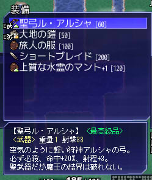

シルバーセカンド開発日誌
2014年09月
■
2014-09-27 (土) 片道+ 52 続スパート▼
今週もたっぷりデータ追加したり、これまでのバグを直したり、
評価が下がるけど楽になる救済措置を入れてみたり、演出を派手にしたり、
アイテム出現の乱数が毎回同じで実は同じアイテムばっかり
拾っていた現象を直したりして完成に近付けていました。
先週の日誌を見ると、一週間前の作業がはるか彼方に思えます。
残りの作業は細かい調整とテストプレイとバグ取りと販売周りの準備や、
オンライン周りの作業などです。いちおう早期アクセス版を出すとは言え、
基準となるバランス決めや、やれば分かるバグ取りくらいは
やっておきたいと思っています。
片道勇者プラスの販売価格は、色んな人とちょっと相談したり
交渉したりして決めたほうがいいかもしれないのでやや未定です。
ただ、このサイトで配布する分に関しては、ウェブマネーの都合で
他のゲームと合わせて合計1000円または2000円にしたほうがいいので、
色々合わせてキリがよくなる値段にしたいですね。
っていうと、もうこのサイトでの値段はほぼ決まってしまいますね。
またプラス版に比べればさらに買う人は減るでしょうけれど、
この後、片道勇者の開発記的なものも出したいと思ってます。
それと合わせて、ジャスト1000円になるよう設定したいなと考えています。
となると、プラス版500円、開発記500円ずつくらいになるでしょうか。
ここからちょっと変わるかもしれませんが、このサイト上での
買いやすさを考えると一番有力な案です。
また、片道勇者プラスの早期リリース版はたぶん他のところでも
購入可能になると思いますので、詳しいことが決まったら
この場や片道勇者プラス公式ページ（まだできてません）でご連絡します。
そうなった場合はウェブマネーを買わなくても、クレジットカードなどで
購入できるようになりますので、いま慌ててウェブマネーを
ご購入にならなくても大丈夫ですよ。
何はともあれ、まずは開発が落ち着くところまで全力でやった後、
関係各所と話をした上で早期アクセス版をリリースする予定です。
ひどい事件が起きない限りは10月中に早期アクセス版を
リリースできると思いますが、今の段階のゲームがあまりにもダメすぎて
かつ現実的な解決法があることが判明したら、やっぱりまだ伸びます。
（数ヶ月でどうにかなるような解決法がなかったら、
「やっぱり私の能力じゃダメだったよ……」
といってリリースすることになると思います）
とにかく、今はゲームの完成を急いでいきます。
個人的な感触では、プラス版を遊び込んだ後だと
無印版はもう遊べないくらいには面白くなってる……と、いう気はします。
ただ進歩によって方向性が少し変化したところもあるので、
そこが合うか合わないかという問題がまた発生するかもしれませんね。■
2014-09-20 (土) 片道+ 51 ラッシュ▼
引き続き限界ギリギリの速度で最終作業を進めています！
作業に時間を使いたいので、今日の開発日誌は極小でお送りします。

◆新しいシステム「レア装備」
今週の目玉要素です。片道勇者プラスでは、非常に低確率で
「最高級品」や「伝説の品」属性が付いた装備が出現します。
これらの装備は、最大耐久度が元の1.2倍または1.5倍になります。
ゲーム的にはそんなに意味ないかな、と思うところもありますが、
「ラッキー！」感を増したり、たまたま手に入れた弱装備を
大事に強化していくきっかけになったりするといいかなという意図です。
こういうのが好きな方も多いみたいですしね。
◆新しいアイテムを大量追加しました。
デコイを大量に生み出す巻物や、砂漠でも行動速度が遅くならない装飾品、
壁で自分を囲い込む巻物や、はずれアイテム、クリア特典アイテム、
超レアアイテムなど、今週だけで20種類近くのアイテムを実装しました。
ちょっとは未知の部分が増えてるといいなと思います。
◆装備に弱体の付与を追加しました
未識別のリスクを増す意図で弱体付与も作りました。
攻撃力が40％下がったり命中率が極端に下がったりしますが、
一方で付与を外してくる敵も用意してあるので
きれいにすれば普通に使うことができます。
装備は、同じ重さの中にちょっと強力なレア品も追加しているので、
識別能力が低いキャラは「アイテムを捨てるべきか否か」で
これまで以上に迷うことになるでしょう。
以下は気になった拍手コメント返信です、いつもありがとうございます！
＞全然関係ないけど、片道勇者公開からもう2年も
＞経ってるんですね・・・。時流れるの早すぎぃ！ .
本当です。計3年くらい生活の糧がなくなりそうだったせいで枯れそうでした。
＞紹介動画を見て思ったけれども、敵との距離が減るごとに
＞矢印が短くなったほうが視覚的にみやすいような気がします。
おかげさまでさらに直感的になりました！ ありがとうございます！
実際にやってみると「小さくなって（遠くなって）消える」方がしっくり来たので、
近いと大きく、遠いと小さく、という方向で採用させていただきました。■
2014-09-13 (土) 片道+ 50 淡々と進行▼
ただいま限界ギリギリの速度で最終作業を進めています。
普段の開発速度は主観的にちょっと遅い方だと思っていましたが
どうやらそれが疲労がたまらないギリギリだったようで、
今のペースだとちょっとずつ疲れが溜まっています。
うまく疲れを減らす工夫も身につけたいですね。
今回は現状の片道勇者プラスの
プレイ紹介動画を撮ってみました。
片道勇者プラスは、インターフェース面でいくらか強化されています。
◆敵の方向や距離を示すマーカーが見やすくなった（ぬるぬる動きます）。
◆敵が近くにいると「！」が出て操作が停止されるオプションが付いた
（操作停止なし・ウェイトなしに変更することもできます）
→ ついでに敵の位置をエフェクトで分かりやすく表示
◆ショートカット機能が付いた（動画内ではやや無理に使ってます）
他にも、しょっちゅう出てくるメッセージ（特に魔王のセリフ）を瞬間表示にしたり、
細かいところでプレイアビリティの向上を目指しています。
なるべく今月中にはベータ段階まで行って、
まずバランス調整に向けた自己テストプレイを始めていく考えです。
ということで、割と急ぎ気味なので今回の記事は短めで。
引き続きボチボチ進めていきます。
まとまった情報は、少し開発が楽になった頃に
プラス版公式サイトを作りますので少々お待ちください！■
2014-09-06 (土) 片道+ 49 スパート▼【片道勇者+ その49】 ラストスパート中
諸処の都合により、遅くても約50日以内に一通り完成させて
内々のテストをし始めた方がいい状況になってきたので、
張り切ってラストスパート中です。
ですが、試しにこの2日間がんばってみても、
どんどんバグが出てきてゴールまでの距離がなかなか縮まらないので
最速目標の一ヶ月で終わる気がしなくなってきました。
できるところまでがんばってみます。
なお、「やれば分かる」頻度のバグ取りを行うために内々のテストが
やや長くなると思いますので、早期アクセス版はまだまだ先です。
さて、今回は片道勇者プラスで新実装されるクラスの、
何度目かのご紹介！ というかまた観光客です！
観光客 B

観光客 Bはメガネの女性です。
最初はカメラを持っていたのですが、
世界観に合わないとのコメントをいただいたので
持ってるものが「旅行記」になりました。
（まあ、結局カメラっぽいなにかをスキルで使用するんですが）
観光客は最弱クラスで、当初はスキルを何も持たない予定でした。
が、片道勇者は初期スキルを駆使して危機的局面を打開することが
攻略のメインとなるゲーム性だったので、スキルも何も無しだと、
詰みが多すぎてあまり面白くない状態になっていました。
そこで今週、調整作業の中で観光客に
「周囲3x3マスの敵を目くらましにする」技、
「小箱からの閃光（仮）」を実装してみました。
※パロディネタです。カメラじゃなくてあくまで謎の小箱
使ってもやっぱり20％くらいの確率で攻撃を受けるので死ぬときは死にますが、
何もできずに死ぬという事態は少し減りました。
運試しすらできないまま詰み状態の未来が見えると、
自分のせいというより不条理感の方が強くなってきてしまいますからね。
以下は気になった拍手コメント返信です、いつもありがとうございます！
＞バグ、というか不具合でしょうか、報告です。
＞10000km到達時にリプレイデータを残したのですが、
＞そのリプレイデータ、だいたい6400km地点から
＞地形が表示されなくなりました。再現性は不明です
情報ありがとうございます！
プラス版でも発生するとかなり困るので、よく調査してみます。
＞以前の記事で眼帯ないとアルバートと分からないとありましたが、彼が
＞眼帯を外すタイミングっていつなんでしょう・・・寝る時って外すのかな
メガネよりも邪魔にならないので、寝る時も
付けっぱなしかもしれませんね。アイマスク的な感じで。 2014年09月
Copyright © SmokingWOLF / Silver Second
 カテゴリ: 片道勇者
カテゴリ: 片道勇者 カテゴリ: 片道勇者
カテゴリ: 片道勇者